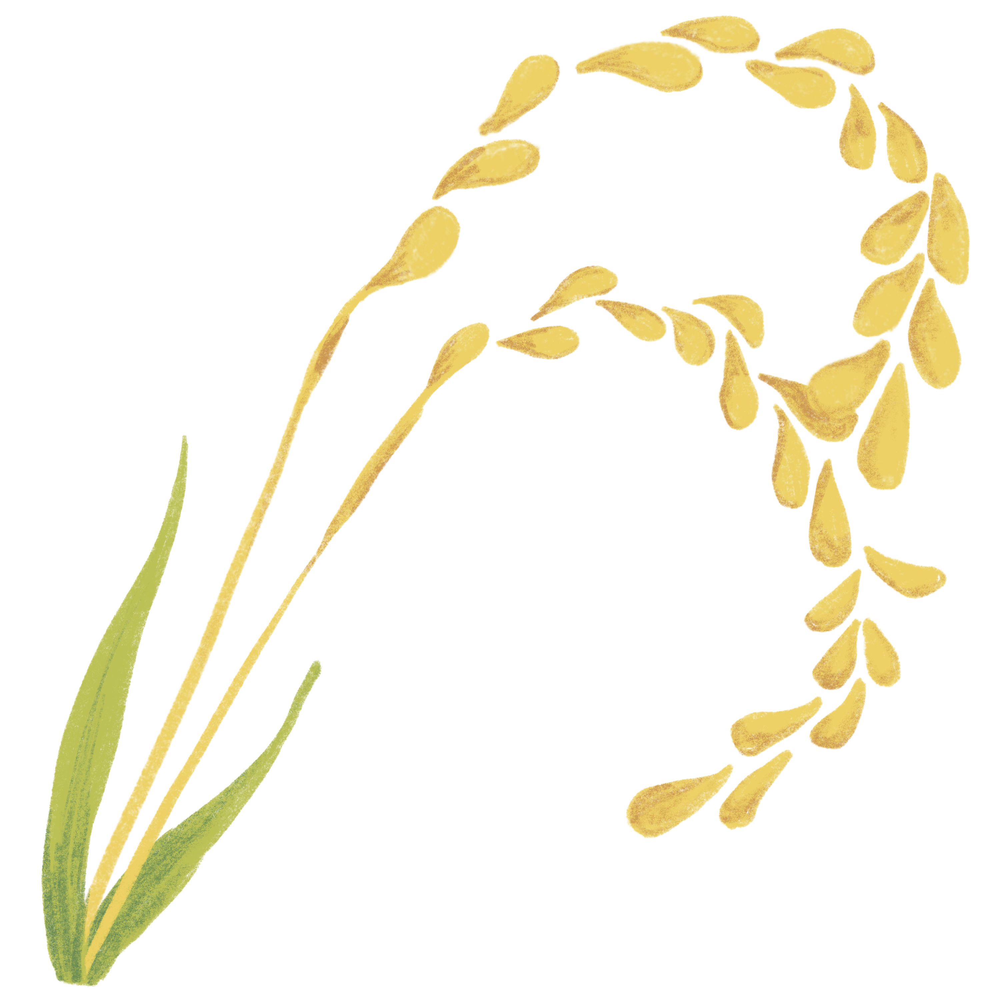
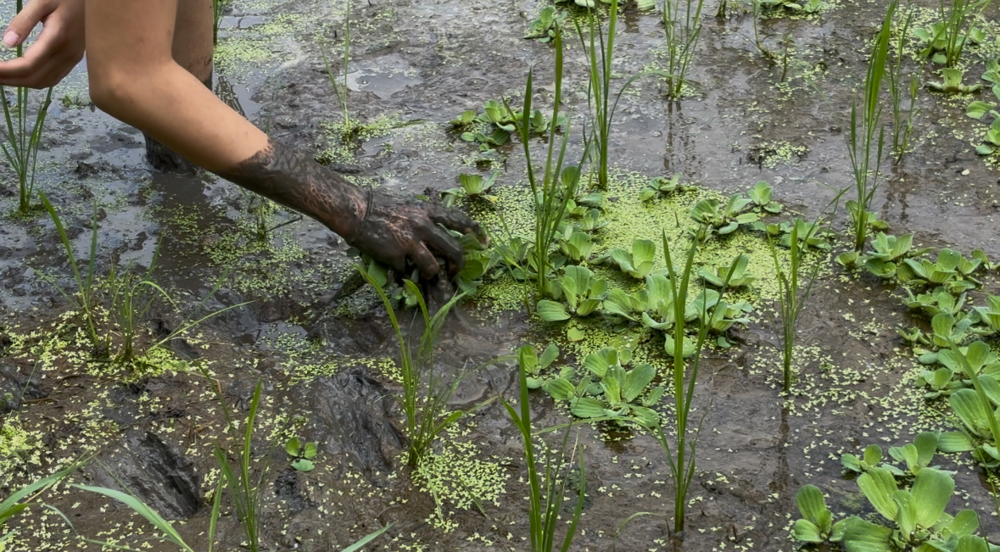

How We Grow Honomi Rice
At Honomi, we believe healthy rice begins with healthy land. Every farming decision is made with long-term sustainability and ecological balance in mind.
We work closely with local Balinese farmers to preserve traditional agricultural wisdom while growing premium organic Japanese rice naturally.
Our Farming Principles

No Artificial Fertilizers

No Toxic Herbicides
Working With Nature
Our rice fields are carefully managed using natural farming systems that protect soil health, biodiversity, and Bali’s water ecosystems.
By avoiding harmful chemicals, we create a cleaner and safer environment for farmers, consumers, and future generations.
